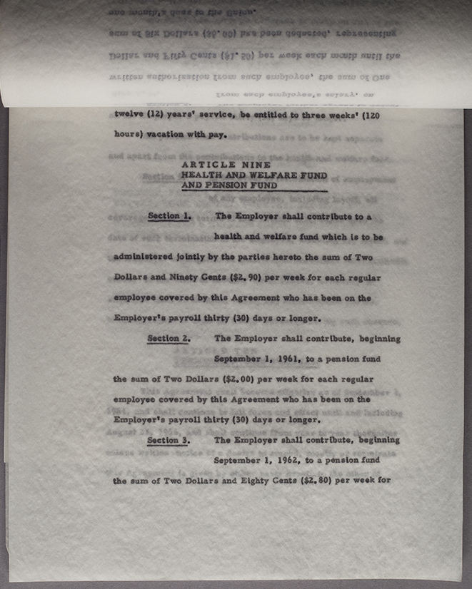Onionskin paper photographed in raking light to highlight the paper texture. Taken from an image of the ILIR Library Teamsters Contracts Vertical File, 1948-69 (35/3/415) from the University Archives. Image courtesy of the University of Illinois Board of Trustees.
Image/Text
Carbon-based ink; Aniline-based ink (VERY COMMON)
Identification
Almost always a single color (but may be any color), image/text appears faint and dull; carbon copies on a semi-translucent paper (manifold, onionskin); typewritten originals on opaque plain paper.
Preservation
Color inks are dye-based, water soluble, light and heat sensitive
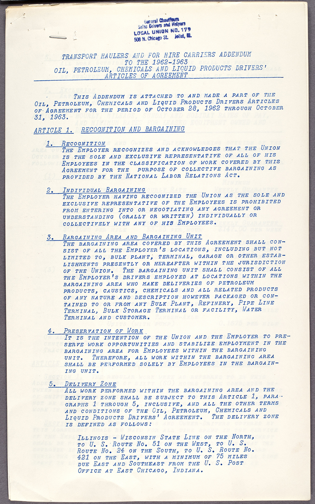Blue ink stencil copy (likely aniline dye ink). Taken from an image of the ILIR Library Teamsters Contracts Vertical File, 1948-69 (35/3/415) from the University Archives. Image courtesy of the University of Illinois Board of Trustees.
Image/Text
Carbon-based ink; Aniline-based ink (VERY COMMON)
Identification
Printed on rough, porous plain paper; may appear similar to hectographs and spirit duplicates. Clotted or spotty characters; oil-based ink will produce an oily halo.
Preservation
Early color inks contain aniline dye, are water soluble, light and heat sensitive
Overall stable, preservation risk depends primarily on quality of support material
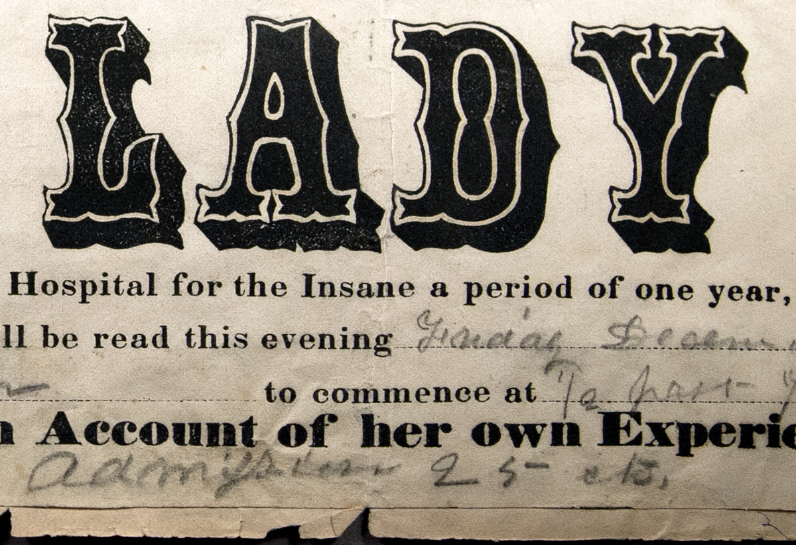Letterpress typographic print. Courtesy of the Illinois History and Lincoln Collections, University Library, UIUC, University of Illinois Board of Trustees.
Image/Text
Carbon-based ink; Aniline-based ink
Identification
Difficult to distinguish from typed originals, and stencil copies, hectographs, lithographs, and spirit duplicates. Characters are embossed; oil-based ink will produce an oily halo.
Preservation
Early color inks contain aniline dye, are water soluble, light and heat sensitive
Overall stable, preservation risk depends primarily on quality of support material
Dye-Ink Transfer Processes (violet, blue, or black ink; smooth surfaced)
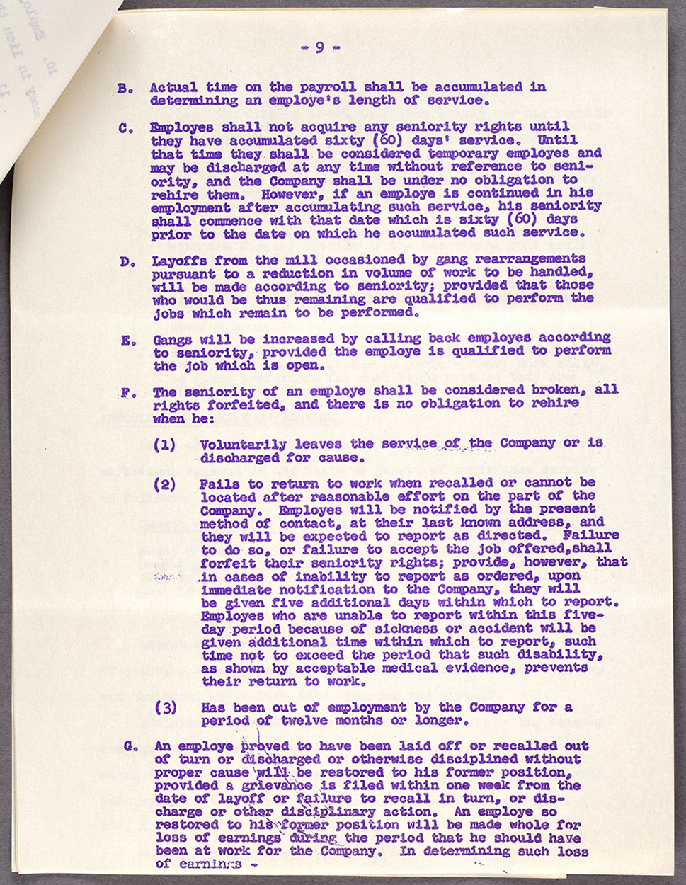Hectograph. Hectographs are nearly indistinguishable and chemically similar (aniline ink) to Spirit Duplicates. Taken from an image of the ILIR Library Teamsters Contracts Vertical File, 1948-69 (35/3/415) from the University Archives. Image courtesy of the University of Illinois Board of Trustees.
Image/Text
Aniline-based ink
Identification
Typically "crystal violet" or blue ink with little to no embossment; printed on bright white, smooth, glossy paper. May appear similar to spirit duplicates and diazo prints.
Preservation
Color inks are dye-based, water soluble, light and heat sensitive
Avoid alkaline enclosures
Copy paper usually contained gelatin or alum rosin sizing; high heat and humidity will cause accelerated deterioration (yellowing, embrittlement)
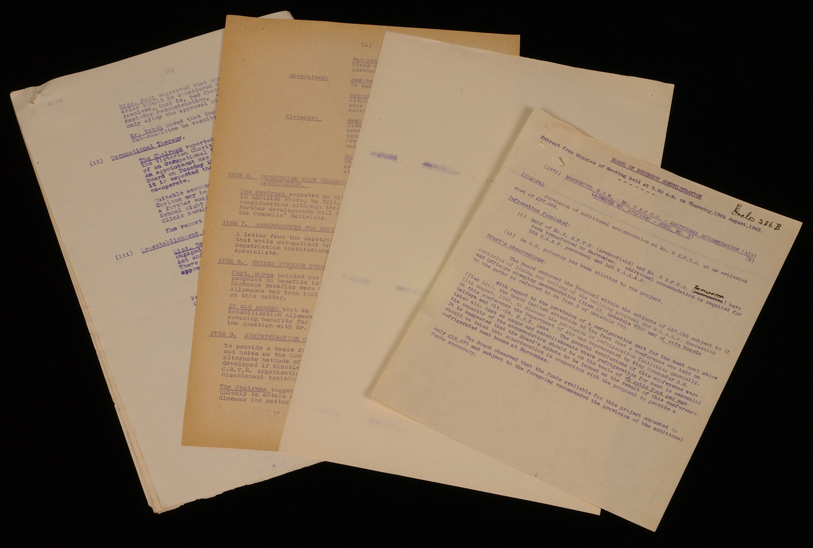Various Spirit Duplicates. Spirit Duplicates are nearly indistinguishable and chemically similar (aniline ink) to Hectographs. Image courtesy of Ian Batterham.
Image/Text
Aniline-based ink
Identification
Characteristic "crystal violet" ink color, although blue or black were also used, displaying little to no embossment. Paper surface is typically smooth and glossy. May appear similar to hectographs.
Preservation
Color inks are dye-based, water soluble, light and heat sensitive
Avoid alkaline enclosures
Paper may be yellowed, image may be faded with low contrast
Photographic Processes (metallic emulsion on specially coated paper)
White text on black background; may have rough edges or odd dimensions as a result of being cut from a roll. Qualitatively similar to a negative photo print, it may exhibit silver mirroring.
Manufacturer’s backprint may be present on verso, as well as blotchy waterstaining or fingerprints. Cut corners are an identifying characteristic of Kodak papers. Specially coated paper is likely thicker than similar copy processes; paper tone is light brown or gray/buff.
Preservation
Sensitive to light
Oxidation may result in silver mirroring
Residual chemicals may cause staining, embrittlement
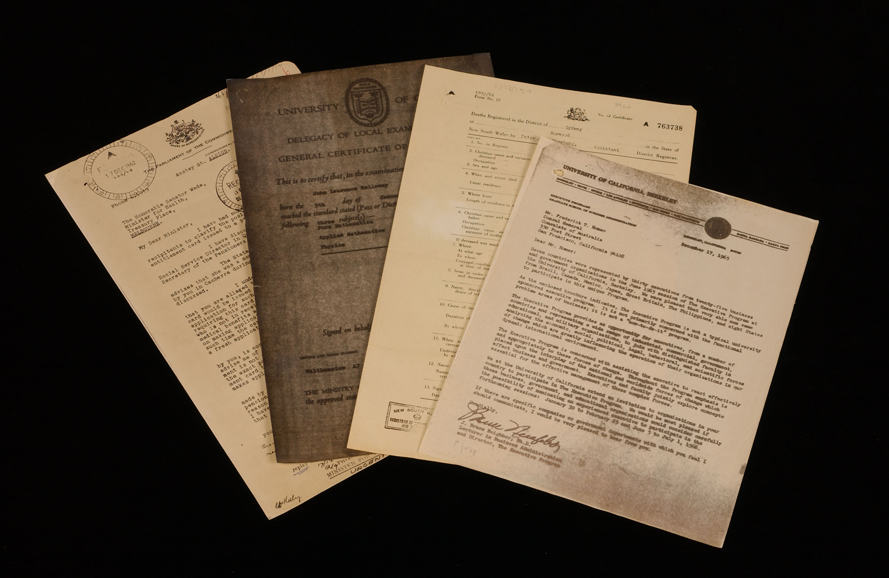Various Dual Spectrum copies. Image courtesy of Ian Batterham.
Image/Text
Photographic silver (emulsion)
Identification
Light blue flame emblem may be present on verso. Paper ground is pinkish or cream colored with dark-red brown or black image. Specially coated papers will vary from flimsy to bond weight..
Preservation
Sensitive to light
Oxidation may result in silver mirroring
Slight acidity of residual silver salts may cause yellowing of support paper over time
Electrostatic Processes (carbon black or CMYK toner)
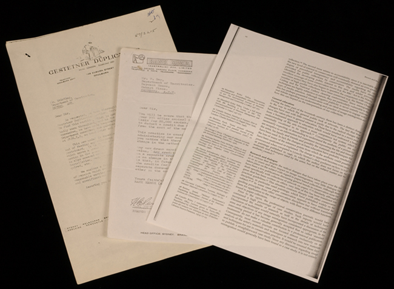Electrostatic (Xerox) copies. Image courtesy of Ian Batterham.
Image/Text
Pigment-based (carbon black) toner (VERY COMMON)
Identification
Black, high-contrast image/text which appears to sit on the surface of the paper; edges of original scanned document may be visible in margin of copy if not aligned exactly during copying.
Preservation
Overall stable, preservation risk depends primarily on quality of support material
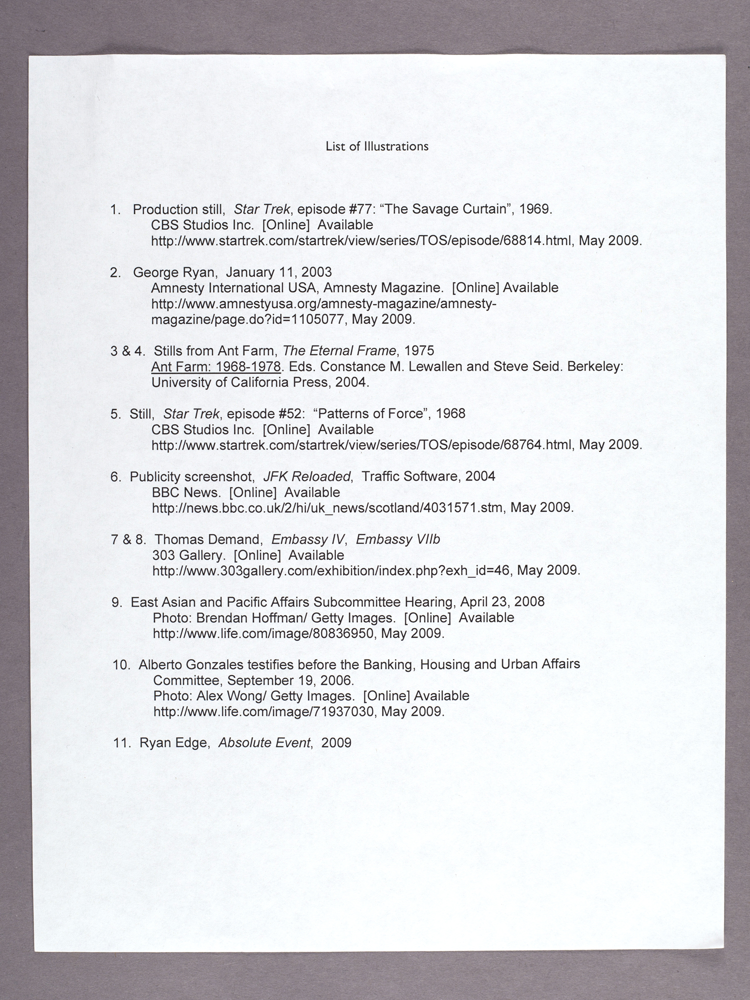Laser print document. Note the absence of imaging/scanning artifacts. Laser printing is an electrostatic printing process typically from a digital source, usually square on the page and without any visible edges of an original scanned dcoument (which sets this apart from Electrostatic Xerox copies).
Image/Text
Pigment-based color (CMYK) toner
Identification
Black or color toner appears to sit on the surface of the paper. Image/text will be square on page, typically exhibiting no artifacts due to computer-generated nature (unless printed from a scan).
Preservation
Pigment-based color inks are more stable than dye-based, but should still be considered sensitive to water and light
Overall stable, preservation risk depends primarily on quality of support material
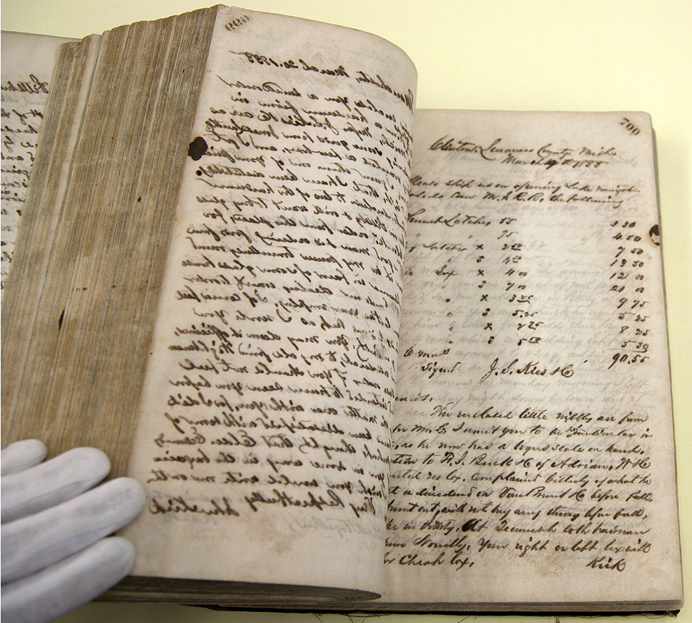Iron gall ink copybook pages. Copybook sheets are often very thin and rendered brittle by iron gall ink, an early transfer ink (aniline ink supplanted iron gall in the mid-19th century). Image courtesy of the Chicago History Museum: John Kirk letter book, John Kirk collection, vol. 3, from the manuscript collection.
Image/Text
Aniline dye ink; Iron gall ink (COMMON)
Identification
Thin, translucent paper
Preservation
Aniline dyes and iron gall ink are unstable; color inks are dye-based, water soluble, light and heat sensitive
May be printed on low-grade wood pulp paper treated with sulphuric acid, causing paper to be embrittled
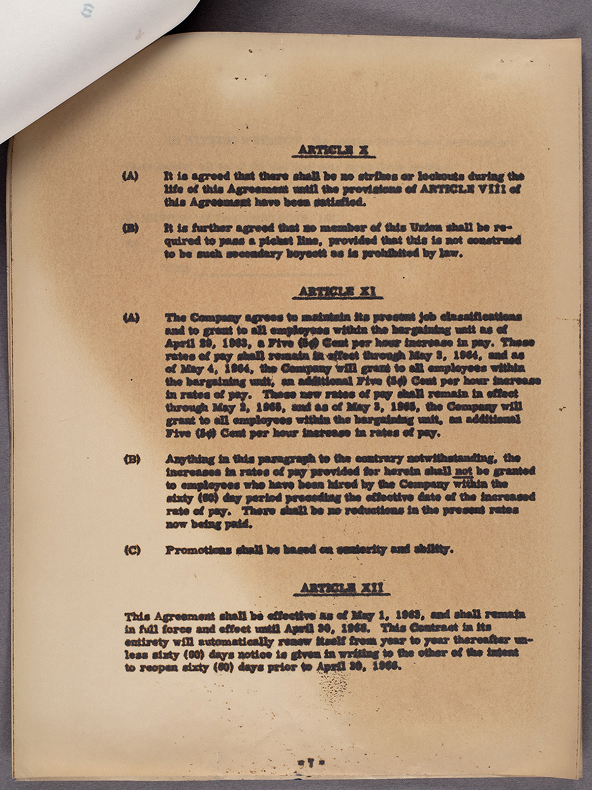Thermofax. Taken from an image of the ILIR Library Teamsters Contracts Vertical File, 1948-69 (35/3/415) from the University Archives. Image courtesy of the University of Illinois Board of Trustees.
Image/Text
Leuco dye (varies: patented chemistry)
Identification
Thin sheet, with discoloration on recto (front), white on verso (back). May be difficult to identify due to variety of ink colors and types of support papers.
Preservation
Yellowing, embrittlement, and image darkening occurs rapidly due to chemical paper coating even if kept in dark storage
Sensitive to high RH and heat—will catalyze paper darkening
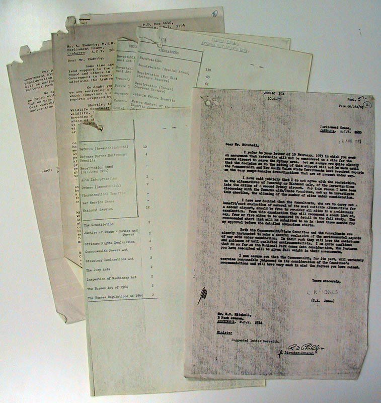Electrofaxes. Image courtesy of Ian Batterham.
Image/Text
Pigment-based toner
Identification
Shiny layer of white pigment (zinc oxide) layer coating the support paper. Copies made after 1977 will display the electrofax logo on verso, a pale yellow outline of a cactus.
Preservation
Zinc oxide coating may crack, flake
Sensitive to heat and light, exposure will cause dye fading
Pigment-based color (CMYK) ink; Dye-based color (CMYK) ink
Identification
Typically full-color, with no scanning artifacts: print matter will be square on page and typically exhibit no artifacts due to computer-generated nature (unless printed from a scan).
Preservation
Ink may be pigment- or dye-based; should be considered sensitive to water and light
Overall fading of the image may occur from light exposure, especially of magenta ink
Preservation risk largely dependent on type and quality of support material, which varies widely